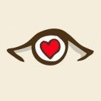
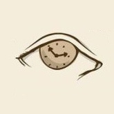
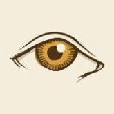
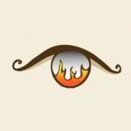
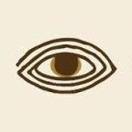

Выберите картинку, которая вам нравится больше всего.
- 
- 
- 
- 
- 
1. Доверчивая личность.
Вы тип человека, который пускает почти любого в свою жизнь и сердце. Вы считаете, что лучше рискнуть и получить травму, чем закрыть себя от людей. Вы никому не показываете свои страхи и неуверенность. Вы считаете, что сами должны решать свои проблемы. Вы пытаетесь отдавать всего себя людям, даже если у самого на Душе кошки скребут. Помогая другим, Вы залечиваете свои раны.2. Педантичная личность.
Вы тип человека, который всегда пытается произвести хорошее впечатление и поступать правильно. Вы полагаете, что Ваши поступки имеют значение в жизни других. Вы не показываете людям своё волнение и то, что Вы расстроены. Вы стараетесь быть лучше, ведь это — самое малое что Вы можете сделать со своим временем на этой планете.3. Жертвенная личность.
Вы пытаетесь найти свой мир везде, где это возможно. Ищете своё место в этом запутанном мире. Вы не показываете людям свои тёмные мысли. Вы прошли через многое. Можно сказать — Вы мастер «собирания» себя после падения.4. Мыслительная личность.
Вы из тех людей, которые любят всё обдумывать. Вы любите находить глубокий и скрытый смысл вещей. Вы, порой, очень сильно погружаетесь в свои мысли, что иногда Вам трудно вернутся обратно. Вы не показываете другим, насколько Вы не уверенны во всем. Вы можете однозначно в чём-то разобраться, но всё ещё оставаться не уверенным по этому поводу. Жизнь Вы представляете головоломкой, и Вы не наиграетесь, пока не соберёте все части воедино.5. Загадочная личность.
Вы даже для себя являетесь загадкой… Удачи тем, кто попробует понять Вас. Вы как паутина противоречий, меняющий своё настроение. Стоит Вам, найти себя как Вы тут же меняетесь и начинаете свой поиск заново. Вы — человек немногословный и запутывающий других, а иногда и себя самого в своих действиях. Вы предпочитаете понаблюдать за человеком, прежде чем завести беседу. Вы говорите только-то, в чём уверенны.6. Чувствительная личность.
Вы тип человека, который всё замечает и ничего не забывает. Вы очень чувствительный и даже самые незначительные вещи могут произвести впечатление на Вас. Вас легко довести до слёз или смеха. Вы не многим показываете, насколько Вы хрупки. Вместо этого Вы показываете насколько проницательными, Вы можете быть. Возможно, Вы можете предвидеть, что в будущем произойдёт в Вашей жизни.7. Энергичная личность.
Вы тип человека, который всё время энергичен или… влюблён. Вы очень проницательный. Вы или любите или ненавидите. У Вас есть тонна и больше мнений… И на поступки Вы решаетесь быстро. В Вас много энергии, но зачастую Вы бываете нервным. Всё — для Вас очень большая ставка. Иногда Вы не можете не создавать драму у себя в голове.8. Эксцентричная личность.
Вы тип человека у которого необычные интересы и убеждения. Вы немного со странностями. Не очень любите правила. Зачастую действуйте по принципу — «Что хочу, то и ворочу и пусть будет, что будет». Вы открыты для других людей. Вы просто смеётесь над теми, кто пытается вас изменить. Не любите быть частью серой массы людей.9. Интуитивная личность.
Вы тип человека, который очень хорошо понимает мир и других людей. Можете сказать очень многое по выражению лица или по тону голоса человека. Чувствуйте, когда Вам лгут. Вы показываете миру только то, что хотите показать. Вы чувствуйте, когда Вами манипулируют, и знаете, как управлять кем-то, если это нужно. Но обычно Вы не прибегаете к этому.